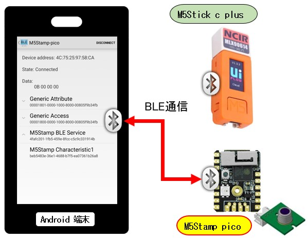

<!DOCTYPE html>
<html lang="ja">
    <head>
        <meta charset="utf-8" />
        <meta name="viewport" content="width=device-width, initial-scale=1" />
        <link rel="stylesheet" href="assets/css/bootstrap_custom.css" />
        <link rel="stylesheet" href="assets/css/bootstrap.min.css" />
        <link rel="stylesheet" href="assets/highlight/styles/default.min.css" />
        <title>M5Stamp picoのBLEライブラリを試す</title>
    </head>

    <body>
        <div class="container" style="max-width: 980px">
            <h4 class="m-2 text-center">M5Stamp picoのBLEライブラリを試す</h4>
            <hr />
            <div class="update-date">【最終更新日】2023-01-24</div>
            <div>
                <p>
                    M5Stamp pico のBLE (Bluetooth Low Energy) ライブラリを使いカウントデータをAndroidアプリでリアルタイムに表示する方法
                </p>
                <div class="row text-center">
                    <div class="col">
                        <figure class="figure">
                            <figcaption class="figure-caption text-center">
                                BLE通信のサンプル構成
                            </figcaption>
                            
                        </figure>
                    </div>
                </div>
                <h5 class="v-line-start">0. Bluetooth Low Energy の参考書</h5>
                <p class="indent small">
                    出版年月日が <b>2015年</b>とかなり古いですが、[参考にした箇所] の理解なしで相互に通信するアプリを構築するには難しいと思いました。
                </p>
                <div class="row m-3">
                    <div class="col-3">
                        
                    </div>
                    <div class="col-auto">
                        <figure>
                            <blockquote class="small" cite="urn:isbn:978-4-87311-713-3">
                                <dl>
                                    <dt>Bluetooth Low Energy を始めよう</dt>
                                    <dd class="indent"><b>ISBN978-4-87311-713-3</b> [発行所] オライリー・ジャパン</dd>
                                </dl>
                                <dl>
                                    <dt>[参考にした箇所]</dt>
                                    <dd">
                                        <ul>
                                            <li>3. GAP(アドバタイズとコネクション</li>
                                            <li>4. GATT(サービスと特性</ul>
                                        </ul>
                                    </dd>
                                </dl>
                            </blockquote>
                        </figure>
                    </div>
                </div>
                </div>
                <h5 class="v-line-start">1. M5Stamp(ESP-WROOM-32)側のBLEサンプル</h5>
                <div class="ms-3">
                    <dl class="small">
                        <dt class="indent">[開発環境]</dt>
                        <dd class="indent">Visual Studio Code on Linux (Ubuntu 22.04)</dd>
                        <dt class="indent">[プラグイン]</dt>
                        <dd>
                            <ul>
                                <li><b>PlatformIO IDE for VSCode</b></li>
                                <li>C/C++ (Microsoft)</li>
                                <li>C/C++ Extention Pack (Microsoft)</li>
                            </ul>
                        </dd>
                        <dt class="indent">[Documentation] M5Stack Core ESP32</dt>
                        <dd class="indent">
                            <a href="https://docs.platformio.org/en/stable/boards/espressif32/m5stack-core-esp32.html" 
                                target="_blank">https://docs.platformio.org/en/stable/boards/espressif32/m5stack-core-esp32.html
                            </a>
                        </dd>
                        <dt class="indent">[platformio.ini]</dt>
                        <dd  class="indent">
                        <pre><code>[env:m5stack-core-esp32]
platform = espressif32
board = m5stack-core-esp32
framework = arduino
upload_protocol = esptool
lib_deps = m5stack/M5Stack@^0.4.3</code></pre>
                        </dd>
                    </dl>
                </div>
                <p class="indent">
                    .platformioディレクトリ配下のBLEライブラリの中にBLE通信のサンプルがあるのでこれを利用します。
                </p>
                <p class="indent fw-bold">[ライブラリパス] ~/.platformio/packages/framework-arduinoespressif32/libraries/BLE/examples</p>
                <div class="row text-center">
                    <div class="col">
                        <figure class="figure">
                            <figcaption class="figure-caption text-center">
                                <b>[使用サンプルディレクトリ] BLE_server_multiconnect</b>
                            </figcaption>
                            
                        </figure>
                    </div>
                </div>
                <!-- Arduino source -->
                <div class="ms-3 mb-5">
                    <p class="small">コメント // [ADD] がついた行が追加した実装で、アドバタイジング中は赤LEDを点滅、接続されると緑LEDが点灯します。 
                        それ以外はオリジナルをそのまま利用します。
                    </p>
                    <div class="small">[サンプルソース] main.cpp [流用元ソース] BLE_server_multiconnect/<b>BLE_server_multiconnect.ino</b></div>
                <pre><code class="fs-small-medium language-cpp">#include &lt;M5Stack.h&gt; // Serialクラス参照: 
#include &lt;BLEDevice.h&gt;
#include &lt;BLEServer.h&gt;
#include &lt;BLEUtils.h&gt;
#include &lt;BLE2902.h&gt;

BLEServer* pServer = NULL;
BLECharacteristic* pCharacteristic = NULL;
bool deviceConnected = false;
bool oldDeviceConnected = false;
uint32_t value = 0;

#define SERVICE_UUID        "4fafc201-1fb5-459e-8fcc-c5c9c331914b"
#define CHARACTERISTIC_UUID "beb5483e-36e1-4688-b7f5-ea07361b26a8"

#define LED_WATING_PIN 25     // [ADD] Blink Red
#define LED_CONNECTED_PIN 19  // [ADD] Green


class MyServerCallbacks: public BLEServerCallbacks {
    void onConnect(BLEServer* pServer) {
      deviceConnected = true;
      BLEDevice::startAdvertising();
    };

    void onDisconnect(BLEServer* pServer) {
      deviceConnected = false;
    }
};

void setup() {
  Serial.begin(115200);
  
  pinMode(LED_WATING_PIN, OUTPUT);      // [ADD]
  digitalWrite(LED_WATING_PIN, LOW);    // [ADD]
  pinMode(LED_CONNECTED_PIN, OUTPUT);   // [ADD]
  digitalWrite(LED_CONNECTED_PIN, LOW); // [ADD]

  // Create the BLE Device
  BLEDevice::init("M5Stamp-pico");      // [Correct] BLEDevice::init("ESP32");

  // Create the BLE Server
  pServer = BLEDevice::createServer();
  pServer->setCallbacks(new MyServerCallbacks());

  // Create the BLE Service
  BLEService *pService = pServer->createService(SERVICE_UUID);

  // Create a BLE Characteristic
  pCharacteristic = pService->createCharacteristic(
                      CHARACTERISTIC_UUID,
                      BLECharacteristic::PROPERTY_READ   |
                      BLECharacteristic::PROPERTY_WRITE  |
                      BLECharacteristic::PROPERTY_NOTIFY |
                      BLECharacteristic::PROPERTY_INDICATE
                    );

  // https://www.bluetooth.com/specifications/gatt/viewer?attributeXmlFile=org.bluetooth.descriptor.gatt.client_characteristic_configuration.xml
  // Create a BLE Descriptor
  pCharacteristic->addDescriptor(new BLE2902());
  
  // Start the service
  pService->start();

  // Start advertising
  BLEAdvertising *pAdvertising = BLEDevice::getAdvertising();
  pAdvertising->addServiceUUID(SERVICE_UUID);
  pAdvertising->setScanResponse(false);
  pAdvertising->setMinPreferred(0x0);  // set value to 0x00 to not advertise this parameter
  BLEDevice::startAdvertising();
  Serial.println("Waiting a client connection to notify...");
}

void loop() {
  if (!deviceConnected) {                  // [ADD]
    digitalWrite(LED_WATING_PIN, HIGH);    // [ADD]
    digitalWrite(LED_CONNECTED_PIN, LOW);  // [ADD]
  } else {                                 // [ADD]
    digitalWrite(LED_WATING_PIN, LOW);     // [ADD]
    digitalWrite(LED_CONNECTED_PIN, HIGH); // [ADD]
  }
  
  // notify changed value
  if (deviceConnected) {
      pCharacteristic->setValue((uint8_t*)&value, 4);
      pCharacteristic->notify();
      value++;
      delay(10); // bluetooth stack will go into congestion, if too many packets are sent, in 6 hours test i was able to go as low as 3ms
  }
  // disconnecting
  if (!deviceConnected && oldDeviceConnected) {
      delay(500); // give the bluetooth stack the chance to get things ready
      pServer->startAdvertising(); // restart advertising
      Serial.println("start advertising");
      oldDeviceConnected = deviceConnected;
  }
  // connecting
  if (deviceConnected && !oldDeviceConnected) {
      // do stuff here on connecting
      oldDeviceConnected = deviceConnected;
  }

  delay(1000);                           // [ADD]
  // Blink Wating LED                    // [ADD]
  if (!deviceConnected) {                // [ADD]  
    digitalWrite(LED_WATING_PIN, LOW);   // [ADD]
  }                                      // [ADD]
  delay(1000);                           // [ADD] 
}</code></pre>
        </div>

                <h5 class="v-line-start mt-3">2. Android側のBluetoothアプリサンプル</h5>
                <p class="indent">
                    下記GitHubからAndroid公式のサンプルアプリをクローンします。クローンした後のサンプルアプリの[1] ([2]、[3]の一部)を利用します。
                </p>
                <p class="indent">git clone <b>https://github.com/android/connectivity-samples.git</b></p>
                <div class="row">
                    <div class="col-md-5">
                        <figure class="figure">
                            <figcaption class="figure-caption text-center">
                                connectivity-samples内のAndroidサンプルアプリ
                            </figcaption>
                            
                        </figure>
                    </div>
                    <div class="col-md-7">
                        <ol class="list-group list-group-numbered">
                            <li class="list-group-item">
                                BluetoothLeGatt<br />
                                <span class="small">Bluetooth LE 汎用属性プロファイル（GATT）を使ってデバイス間で任意のデータを送信するアプリ。
                                    下記公式サイトの解説のサンプルとなっています</span>
                                <ul class="list-group">
                                    <li class="list-group-item list-group-item-info">1-1 Find BLE devices<br />
                                    <a class="fs-small-medium"
                                       href="https://developer.android.com/guide/topics/connectivity/bluetooth/find-ble-devices" 
                                       target="_blank">https://developer.android.com/guide/topics/connectivity/bluetooth/find-ble-devices
                                    </a>
                                    </li>
                                    <li class="list-group-item list-group-item-secondary">1-2 Connect to a GATT server<br />
                                    <a class="fs-small-medium"
                                       href="https://developer.android.com/guide/topics/connectivity/bluetooth/connect-gatt-server" 
                                       target="_blank">https://developer.android.com/guide/topics/connectivity/bluetooth/connect-gatt-server
                                    </a>
                                    </li>
                                    <li class="list-group-item list-group-item-secondary">1-3 Transfer BLE data<br />
                                    <a class="fs-small-medium"
                                       href="https://developer.android.com/guide/topics/connectivity/bluetooth/transfer-ble-data" 
                                       target="_blank">https://developer.android.com/guide/topics/connectivity/bluetooth/transfer-ble-data
                                    </a>
                                    </li>
                                </ul>
                            </li>
                            <li class="list-group-item">NearbyConnectionsWlkieTalkie<br />
                                <span class="small">Demonstrates streaming audio with the Nearby.Connections API to other nearby devices.</span><br />
                                <span class="small fw-bold">※1 上記1のソースを最新のSDKでビルドして実行するとデバイスをスキャンできない問題があります。
                                    下記公式サイトの解説によるとパーミッションとBluetooth実行時権限が不足していることが原因となっています。<br /></span>
                                <span class="small">※2 このアプリからパーミッションとBluetoothの実行時権限付与の実装部分を流用し、デバイスがスキャンができるように改造します。</span>
                                <ul class="list-group">
                                    <li class="list-group-item list-group-item-secondary">
                                        2-1 Bluetooth の概要: Bluetooth のパーミッション<br />
                                        <a class="fs-small-medium"
                                           href="https://developer.android.com/guide/topics/connectivity/bluetooth?hl=ja" 
                                           target="_blank">
                                           https://developer.android.com/guide/topics/connectivity/bluetooth?hl=ja
                                        </a>
                                    </li>
                                    <li class="list-group-item list-group-item-danger">
                                        2-2 Android 12 の新しい Bluetooth 権限<br />
                                        <a class="fs-small-medium"
                                           href="https://developer.android.com/about/versions/12/features/bluetooth-permissions?hl=ja" 
                                           target="_blank">
                                           https://developer.android.com/about/versions/12/features/bluetooth-permissions?hl=ja
                                        </a>
                                    </li>
                                    <li class="list-group-item list-group-item-danger">
                                        2-3 Bluetooth permissions<br />
                                        <a class="fs-small-medium"
                                           href="https://developer.android.com/guide/topics/connectivity/bluetooth/permissions" 
                                           target="_blank">https://developer.android.com/guide/topics/connectivity/bluetooth/permissions
                                        </a>
                                    </li>
                                </ul>
                            </li>
                            <li class="list-group-item">
                                BluetoothAdvertisements<br/>
                                <span class="small">Bluetooth Low Energy API を使って少量のデータをアドバタイズする方法と、アドバタイズメントをスキャンする方法</span><br />
                                <span class="small fw-bold">※上記1アプリのスキャン処理がDeprecatedになっています。このアプリのスキャン処理部分のソースを流用します。</span>
                            </li>
                        </ol>
                    </div>
                </div>


                <div class="my-3">
                    <h6>2-1-A. コードを修正せずにデバック用にビルドしたAPKをAndroid端末にインストール</h6>
                    <p class="indent small">下記が実行したときのスクリーンショット。BLEデバイスのスキャンに失敗しているので画面には何も表示されません。</p>
                    <div class="row text-center">
                        <div class="col">
                            <figure class="figure">
                                <figcaption class="figure-caption text-center">
                                    <b>BLEデバイスがリストに表示されない ※赤LEDが点滅状態</b>
                                </figcaption>
                                
                            </figure>
                        </div>
                    </div>
                    <h6>2-1-B. パーミッションと実行時権限を追加してビルドしたAPKをAndroid端末にインストール</h6>
                    <p class="indent small">
                        アプリを起動すると「デバイス検出、接続、相対位置の特定」を許可するかどうかの確認ダイアログが表示されます。(左画面)
                    </p>
                    <ul class="small">
                        <li>[許可] を押下すると検出されたデバイスが表示されます。(右画面)</li>
                        <li>[許可しない]を押下するとアプリが終了します。</li>
                    </ul>
                    <div class="row text-center">
                        <div class="col">
                            <figure class="figure">
                                <figcaption class="figure-caption text-center">
                                    <b>検出されたデバイスを表示するスマホとM5Stamp pico ※まだ接続されていない状態</b>
                                </figcaption>
                                
                            </figure>
                        </div>
                    </div>
                    
                    <h6>2-2. アプリの改造 (1) AndroidX (Android Jetpack) 対応</h6>
                    <dl class="ms-2 small">
                        <dt class="indent">AndroidX への移行</dt>
                        <dd class="indent-double">
                            <a href="https://developer.android.com/jetpack/androidx/migrate?hl=ja"
                            target="_blank"
                            class="small">
                            https://developer.android.com/jetpack/androidx/migrate?hl=ja
                            </a>
                        </dd>
                    </dl>    
                    <div class="ms-3 mb-4">
                        <div class="small">[A] 修正前: app/build.gradle <b>※サポートライブラリをAndroidX に変更する</b></div>
                <pre><code class="fs-small-medium xml">...一部省略...
dependencies {
        implementation "com.android.support:support-v4:28.0.0"
        implementation "com.android.support:support-v13:28.0.0"
        implementation "com.android.support:cardview-v7:28.0.0"
        implementation "com.android.support:appcompat-v7:28.0.0"
}
...一部省略...
android {
    compileSdkVersion 28

    defaultConfig {
        minSdkVersion 18
        targetSdkVersion 28
    }
    ...一部省略...
}</code></pre>
                    </div>
                    <div class="ms-3">
                        <div class="small">[B-1] 追記: gradle.properties</div>
                <pre><code class="fs-small-medium xml">android.useAndroidX=true</code></pre>             
                        <div class="small">[B-2] 修正後: app/build.gradle</div>
                <pre><code class="fs-small-medium xml">...一部省略...
android {
    namespace 'com.examples.android.blescanlegatt'
    compileSdk 32

    defaultConfig {
        applicationId "com.examples.android.blescanlegatt"
        minSdk 26
        targetSdk 32
    ...一部省略...
    }
}

dependencies {
    implementation 'androidx.appcompat:appcompat:1.5.1'
    implementation "androidx.core:core:1.8.0"
}</code></pre>             
                    </div>

                    <h6>2-2. アプリの改造 (2) AndroidManifest.xml</h6>
                    <p class="indent">Android SDKバージョンに応じたパーミッションを追加・編集する。</p>
                    <div class="ms-3 mt-3">
                        <div class="small">[A] 修正前</div>
                <pre><code class="fs-small-medium xml">&lt;uses-feature android:name="android.hardware.bluetooth_le" android:required="true"/&gt;

&lt;uses-permission android:name="android.permission.BLUETOOTH"/&gt;
&lt;uses-permission android:name="android.permission.BLUETOOTH_ADMIN"/&gt;</code></pre>
                    </div>
                    <div class="ms-3">
                        <div class="small">
                            [B] 修正後 ※<b>NearbyConnectionsWalkieTalkie</b>/app/src/main/AndroidManifest.xml のパーミッション部分をそのまま利用する。<br />
                            パーミッションについての詳しい説明は上記 [2-3] Bluetooth permissions のドキュメントを参照のこと。
                        </div>
                <pre><code class="fs-small-medium xml">&lt;uses-feature android:name="android.hardware.bluetooth" android:required="true"/&gt;
&lt;uses-feature android:name="android.hardware.bluetooth_le" android:required="true"/&gt;

&lt;!-- For Android 11 (30) or older -->
&lt;uses-permission android:name="android.permission.BLUETOOTH" android:maxSdkVersion="30" /&gt;
&lt;uses-permission android:name="android.permission.BLUETOOTH_ADMIN" android:maxSdkVersion="30" /&gt;
&lt;!-- Needed only if your app looks for Bluetooth devices.
You must add an attribute to this permission, or declare the
ACCESS_FINE_LOCATION permission, depending on the results when you
check location usage in your app. -->
&lt;uses-permission android:name="android.permission.ACCESS_FINE_LOCATION_LOCATION" android:maxSdkVersion="30" /&gt;

&lt;!-- Android 12 (31) higher -->
&lt;uses-permission android:name="android.permission.BLUETOOTH_CONNECT" /&gt;
&lt;uses-permission android:name="android.permission.BLUETOOTH_SCAN" android:usesPermissionFlags="neverForLocation" /&gt;</code></pre>
                    </div>

                    <h6>2-2. アプリの改造 (3) パーミッション・実行時権限付与の処理追加</h6>
                    <p class="indent">
                        実行時権限付与をスクラッチで実装するのは非常にコストのかかる作業になります。
                        闇雲に部品を開発せずに公式サンプルにあるコードを積極的に活用します。
                    </p>
                    <dl class="ms-2 small">
                        <dt class="indent">
                            [流用元ソース] NearbyConnectionsWlkieTalkie アプリから実行時権限付与の処理部分を流用
                        </dt>
                        <dd class="indent-double">
                            NearbyConnectionsWalkieTalkie/app/src/main/java/com/google/location/nearby/apps/walkietalkie/<b>ConnectionsActivity.java</b>
                        </dd>

                    </dl>    
                    <div class="ms-3 mb-4">
                        <div class="small">
                            [流用部分] ※但し、BLEスキャンに無関係のパーミッションはコメントアウトまたは削除します。
                        </div>
                <pre><code class="fs-small-medium language-java">/**
* These permissions are required before connecting to Nearby Connections.
*/
private static final String[] REQUIRED_PERMISSIONS;
static {
if (Build.VERSION.SDK_INT >= Build.VERSION_CODES.S) {
    REQUIRED_PERMISSIONS =
        new String[] {
        Manifest.permission.BLUETOOTH_SCAN,
//            Manifest.permission.BLUETOOTH_ADVERTISE,
        Manifest.permission.BLUETOOTH_CONNECT,
//            Manifest.permission.ACCESS_WIFI_STATE,
//            Manifest.permission.CHANGE_WIFI_STATE,
//            Manifest.permission.ACCESS_COARSE_LOCATION,
//            Manifest.permission.ACCESS_FINE_LOCATION,
        };
} else if (Build.VERSION.SDK_INT >= Build.VERSION_CODES.Q) {
    REQUIRED_PERMISSIONS =
        new String[] {
        Manifest.permission.BLUETOOTH,
        Manifest.permission.BLUETOOTH_ADMIN,
//            Manifest.permission.ACCESS_WIFI_STATE,
//            Manifest.permission.CHANGE_WIFI_STATE,
//            Manifest.permission.ACCESS_COARSE_LOCATION,
        Manifest.permission.ACCESS_FINE_LOCATION,
        };
} else {
    REQUIRED_PERMISSIONS =
        new String[] {
        Manifest.permission.BLUETOOTH,
        Manifest.permission.BLUETOOTH_ADMIN,
//            Manifest.permission.ACCESS_WIFI_STATE,
//            Manifest.permission.CHANGE_WIFI_STATE,
//            Manifest.permission.ACCESS_COARSE_LOCATION,
        };
}
}

private static final int REQUEST_CODE_REQUIRED_PERMISSIONS = 1;

/** Called when our Activity has been made visible to the user. */
@Override
protected void onStart() {
    super.onStart();
    if (!hasPermissions(this, getRequiredPermissions())) {
// minSdk が 24以上のため下記部分をコメントアウトする        
//        if (Build.VERSION.SDK_INT < 23) {
//            ActivityCompat.requestPermissions(
//            this, getRequiredPermissions(), REQUEST_CODE_REQUIRED_PERMISSIONS);
//        } else {
            requestPermissions(getRequiredPermissions(), REQUEST_CODE_REQUIRED_PERMISSIONS);
//        }
    }
}

/** Called when the user has accepted (or denied) our permission request. */
@Override
public void onRequestPermissionsResult(
    int requestCode, @NonNull String[] permissions, @NonNull int[] grantResults) {
    if (requestCode == REQUEST_CODE_REQUIRED_PERMISSIONS) {
        int i = 0;
        for (int grantResult : grantResults) {
            if (grantResult == PackageManager.PERMISSION_DENIED) {
                logW("Failed to request the permission " + permissions[i]);
                Toast.makeText(this, R.string.error_missing_permissions, Toast.LENGTH_LONG).show();
                finish();
                return;
            }
            i++;
        }
        recreate();
    }
    super.onRequestPermissionsResult(requestCode, permissions, grantResults);
}

/**
* An optional hook to pool any permissions the app needs with the permissions ConnectionsActivity
* will request.
*
* @return All permissions required for the app to properly function.
*/
protected String[] getRequiredPermissions() {
    return REQUIRED_PERMISSIONS;
}

/**
* Returns {@code true} if the app was granted all the permissions. Otherwise, returns {@code
* false}.
*/
public static boolean hasPermissions(Context context, String... permissions) {
    for (String permission : permissions) {
        if (ContextCompat.checkSelfPermission(context, permission)
            != PackageManager.PERMISSION_GRANTED) {
            return false;
        }
    }
    return true;
}</code></pre>
                    </div>

                    <h6>2-2. アプリの改造 (4) デバイススキャン処理の置き換え</h6>
                    <p class="indent">
                        API level 21 で DeprecatedになっているBluetoothAdapter.startLeScan() を BluetoothLeScannerのスキャンメソッドに置き換える。 
                    </p>
                    <dl class="ms-2 small">
                        <dt class="indent">BluetoothAdapter#startLeScan</dt>
                        <dd class="indent">
                            <a href="https://developer.android.com/reference/android/bluetooth/BluetoothAdapter#startLeScan(android.bluetooth.BluetoothAdapter.LeScanCallback)"
                            target="_blank"
                            class="small">
                            https://developer.android.com/reference/android/bluetooth/BluetoothAdapter#startLeScan(android.bluetooth.BluetoothAdapter.LeScanCallback)
                            </a>
                        </dd>
                        <dt class="indent">[適用先ソース]</dt>
                        <dd class="indent-double">
                            BluetoothLeGatt/Application/src/main/java/com/example/android/bluetoothlegatt/<b>DeviceScanActivity.java</b>
                        </dd>
                    </dl>
                    <div class="ms-3 mb-4">
                        <div class="small fw-bold">[A] 修正前: 以下の処理部分を廃止する</div>
                <pre><code class="fs-small-medium language-java">private BluetoothAdapter mBluetoothAdapter;

private void scanLeDevice(final boolean enable) {
    if (enable) {
        // Stops scanning after a pre-defined scan period.
        mHandler.postDelayed(new Runnable() {
            @Override
            public void run() {
                mScanning = false;
                mBluetoothAdapter.stopLeScan(mLeScanCallback); // This method was deprecated in API level 21.
                invalidateOptionsMenu();
            }
        }, SCAN_PERIOD);

        mScanning = true;
        mBluetoothAdapter.startLeScan(mLeScanCallback);  // This method was deprecated in API level 21.
    } else {
        mScanning = false;
        mBluetoothAdapter.stopLeScan(mLeScanCallback);  // This method was deprecated in API level 21.
    }
    invalidateOptionsMenu();
}

// Device scan callback.
private BluetoothAdapter.LeScanCallback mLeScanCallback =
        new BluetoothAdapter.LeScanCallback() {

    @Override
    public void onLeScan(final BluetoothDevice device, int rssi, byte[] scanRecord) {
        runOnUiThread(new Runnable() {
            @Override
            public void run() {
                mLeDeviceListAdapter.addDevice(device);
                mLeDeviceListAdapter.notifyDataSetChanged();
            }
        });
    }
};</code></pre>
                    </div>

                    <dl class="ms-2 small">
                        <dt class="indent">[流用元ソース]</dt>
                        <dd class="indent-double">
                        BluetoothAdvertisements/Application/src/main/java/com/example/android/bluetoothadvertisements/<b>ScannerFragment.java</b>
                        </dd>
                    </dl>
                    <div class="ms-3">
                        <div class="small fw-bold">[B] 修正後</div>
                        <ul class="small">
                            <li>スキャン開始前、スキャン終了前に<b>実行時権限チェック処理を追加</b>■</li>
                            <li>スキャン開始: mBluetoothAdapter.startLeScan(...) --&gt; <b>mBluetoothLeScanner.startScan(...)</b></li>
                            <li>スキャン終了: mBluetoothAdapter.stopLeScan(...) --&gt; <b>mBluetoothLeScanner.stopScan(...)</b></li>
                            <li>スキャンコールバック BluetoothAdapter.LeScanCallback --&gt; android.bluetooth<b>.le.ScanCallback</b></li>
                            <li>リストアダブターの変数名 mAdapter --&gt; <b>mLeDeviceListAdapter</b></li>
                        </ul>
                        <pre><code class="fs-small-medium language-java">private BluetoothLeScanner mBluetoothLeScanner;

/**
 * Start scanning for BLE Advertisements (& set it up to stop after a set period of time).
 */
public void startScanning() {
    if (mScanCallback == null) {
        Log.d(TAG, "Starting Scanning");

        // Will stop the scanning after a set time.
        mHandler.postDelayed(new Runnable() {
            @Override
            public void run() {
                stopScanning();
                invalidateOptionsMenu();           // 追加
            }
        }, SCAN_PERIOD);

        // Kick off a new scan.
        mLeScanCallback = new SampleScanCallback();
        // ■ ここから実行時権限チェック処理を追加 ■
        if (ActivityCompat.checkSelfPermission(this, Manifest.permission.BLUETOOTH_SCAN)
                != PackageManager.PERMISSION_GRANTED) {
            // ひとまずスキャンしないでリターン
            return;
        }
        // ■ ここまで ■

        mBluetoothLeScanner.startScan(buildScanFilters(), buildScanSettings(), mLeScanCallback); // ■ 実行時権限が必要

        String toastText = getString(R.string.scan_start_toast) + " "
                + TimeUnit.SECONDS.convert(SCAN_PERIOD, TimeUnit.MILLISECONDS) + " "
                + getString(R.string.seconds);
        Toast.makeText(getActivity(), toastText, Toast.LENGTH_LONG).show();
    } else {
        Toast.makeText(getActivity(), R.string.already_scanning, Toast.LENGTH_SHORT).show();
    }
}

/**
 * Stop scanning for BLE Advertisements.
 */
public void stopScanning() {
    Log.d(TAG, "Stopping Scanning");

    // Stop the scan, wipe the callback.
    // ■ ここから実行時権限チェック処理を追加 ■
    if (ActivityCompat.checkSelfPermission(this, Manifest.permission.BLUETOOTH_SCAN)
            != PackageManager.PERMISSION_GRANTED) {
        return;
    }
    // ■ ここまで ■

    mBluetoothLeScanner.stopScan(mScanCallback);
    mScanCallback = null;

    // Even if no new results, update 'last seen' times.
    mLeDeviceListAdapter.notifyDataSetChanged();
}

/**
 * Return a List of {@link ScanFilter} objects to filter by Service UUID.
 */
private List&lt;ScanFilter&gt; buildScanFilters() {
    List&lt;ScanFilter&gt; scanFilters = new ArrayList&lt;&gt;();

    ScanFilter.Builder builder = new ScanFilter.Builder();
    // Comment out the below line to see all BLE devices around you
//    builder.setServiceUuid(Constants.Service_UUID);               &lt;-- コメントアウトする
    scanFilters.add(builder.build());

    return scanFilters;
}

/**
 * Return a {@link ScanSettings} object set to use low power (to preserve battery life).
 */
private ScanSettings buildScanSettings() {
    ScanSettings.Builder builder = new ScanSettings.Builder();
    builder.setScanMode(ScanSettings.SCAN_MODE_LOW_POWER);
    return builder.build();
}

/**
 * Custom ScanCallback object - adds to adapter on success, displays error on failure.
 */
private class SampleScanCallback extends ScanCallback {

    @Override
    public void onBatchScanResults(List&lt;ScanResult&gt; results) {
        super.onBatchScanResults(results);

        for (ScanResult result : results) {
            mLeDeviceListAdapter.add(result);
        }
        mLeDeviceListAdapter.notifyDataSetChanged();
    }

    @Override
    public void onScanResult(int callbackType, ScanResult result) {
        super.onScanResult(callbackType, result);

        mLeDeviceListAdapter.add(result);
        mLeDeviceListAdapter.notifyDataSetChanged();
    }

    @Override
    public void onScanFailed(int errorCode) {
        super.onScanFailed(errorCode);
        Toast.makeText(getActivity(), "Scan failed with error: " + errorCode, Toast.LENGTH_LONG)
                .show();
    }
}</code></pre>
                    </div>

                    <h6>2-2. アプリの改造 (5) M5Stamp pico のBLE通信に対応</h6>
                    <dl class="ms-2 small">
                        <dt class="indent">[適用先ソース] BLE通信のサービスUUID・キャラクタリスティックUUIDの定義を追加する</dt>
                        <dd class="indent-double">
                        BluetoothLeGatt/Application/src/main/java/com/example/android/bluetoothlegatt/<b>SampleGattAttributes.java</b>
                        </dd>
                    </dl>
                    <div class="ms-3 mb-4">
                        <div class="small fw-bold">[修正後] 追加箇所 ■ ... ■間のソース</div>
                        <pre><code class="fs-small-medium language-java">/**
 * This class includes a small subset of standard GATT attributes for demonstration purposes.
 */
public class SampleGattAttributes {
    private final static HashMap&lt;String, String&gt; attributes = new HashMap&lt;&gt;();
    public static String HEART_RATE_MEASUREMENT = "00002a37-0000-1000-8000-00805f9b34fb";
    public static String CLIENT_CHARACTERISTIC_CONFIG = "00002902-0000-1000-8000-00805f9b34fb";
    // ■ ここから追加 ■
    // M5Stamp pico example UUIDs
    public static String SAMPLE_SERVICE = "4fafc201-1fb5-459e-8fcc-c5c9c331914b";
    public static String SAMPLE_CHARACTERISTIC = "beb5483e-36e1-4688-b7f5-ea07361b26a8";
    public static String GENERIC_ACCESS = "00001800-0000-1000-8000-00805f9b34fb";
    public static String GENERIC_ATTRIBUTE = "00001801-0000-1000-8000-00805f9b34fb";
    // ■ ここまで ■

    static {
        // Sample Services.
        attributes.put("0000180d-0000-1000-8000-00805f9b34fb", "Heart Rate Service");
        attributes.put("0000180a-0000-1000-8000-00805f9b34fb", "Device Information Service");
        // Sample Characteristics.
        attributes.put(HEART_RATE_MEASUREMENT, "Heart Rate Measurement");
        attributes.put("00002a29-0000-1000-8000-00805f9b34fb", "Manufacturer Name String");

        // ■ ここから追加 ■
        // Sample Services.
        attributes.put(SAMPLE_SERVICE, "M5Stamp BLE Service");
        // Sample Characteristics.
        attributes.put(SAMPLE_CHARACTERISTIC, "M5Stamp Characteristic1");
        // M5Stamp pico
        attributes.put(GENERIC_ACCESS, "Generic Access");
        attributes.put(GENERIC_ATTRIBUTE, "Generic Attribute");
        // ■ ここまで ■
    }

    public static String lookup(String uuid, String defaultName) {
        String name = attributes.get(uuid);
        return name == null ? defaultName : name;
    }
}                        </code></pre>
                    </div>    

                    <h5 class="v-line-start">3 改造したアプリの実行結果</h5>
                    <h6 class="ms-2">3-1. ターゲットBLEデバイスを限定する</h6>
                    <div class="ms-3 mb-4">
                        <pre><code class="fs-small-medium language-java">// Target BLE device Address: M5Stamp pico
private static final String M5_ADDRESS = "4C:75:25:97:58:CA";

private List&lt;ScanFilter&gt; buildScanFilters() {
    List&lt;ScanFilter&gt; scanFilters = new ArrayList&gt;&lt;();
    ScanFilter.Builder builder = new ScanFilter.Builder();
    builder.setDeviceAddress(M5_ADDRESS);  // ■ Bluetooth device アドレスを限定
    scanFilters.add(builder.build());
    return scanFilters;
}</pre></code>
                           
                    </div>    
                    <ul class="small">
                        <li>
                            [3-1]: 画面[2b]でデバイス【M5Stamp-pico】をタップしたあとの詳細画面<br />
                            ※1 サービス [Generic Attribute]と[Generic Access] は M5Stamp pico のBLEライブラリが出力したもの<br />
                            ※2 サービス [M5Stamp BLE Service] はBLE通信プログラムが出力したもの
                        </li>
                        <li>[3-2]: 【M5Stamp BLE Service】をタップしたあとのキャラクタリスティック</li>
                        <li>
                            [3-3]: 【M5Stamp Characteristic1】をタップすると BLEデバイスのカウンターデータが表示される<br />
                            ※ 1. M5Stamp(ESP-WROOM-32)側のBLEサンプルコードではリアルタイムにデータは更新されない
                        </li>
                    </ul>
                    <div class="row">
                        <div class="col">
                            <figure class="figure">
                                <figcaption class="figure-caption text-center">
                                    <b>M5Stamp pico のBLE通信プログラムのカウンターデータを [Data] に出力している画面</b>
                                </figcaption>
                                
                            </figure>
                        </div>
                    </div>

                    <h6>3-2. データをリアルタイムに送信するためのBLEデバイス側の処理修正</h6>
                    <p class="indent">
                        ディスクリプタの通知を有効にすると AndroidアプリのDataがリアルタイムに更新されるようになります。
                    </p>
                    <div class="ms-3">
                        <pre><code class="fs-small-medium language-cpp">// pCharacteristic->addDescriptor(new BLE2902());
//+ADD code Start ++++++++++++++++++++++++++++++
BLE2902 *pDescriptor = new BLE2902();
// Characteristic notification enable -> Android BluetoothGattApp auto value updating.
pDescriptor->setNotifications(true);
pCharacteristic->addDescriptor(pDescriptor);
//+ADD code End ++++++++++++++++++++++++++++++++</code></pre>
                    </div>    
                    <h6>3-3. Androidアプリから出力されたログの抜粋</h6>
                    <p class="indent small">キャラクタリスティックUUIDに対応する特性プロパティ</p>
                    <div class="ms-3">
                        <pre><code class="fs-small-medium language-cpp">D/DeviceControlActivity: onReceive(): intent=Intent { act=com.example.bluetooth.le.ACTION_GATT_SERVICES_DISCOVERED flg=0x10 }
D/DeviceControlActivity: Characteristic.UUID:00002a05-0000-1000-8000-00805f9b34fb,Properties(32) INDICATE
D/DeviceControlActivity: Characteristic.UUID:00002a00-0000-1000-8000-00805f9b34fb,Properties(2) READ
D/DeviceControlActivity: Characteristic.UUID:00002a01-0000-1000-8000-00805f9b34fb,Properties(2) READ
D/DeviceControlActivity: Characteristic.UUID:00002aa6-0000-1000-8000-00805f9b34fb,Properties(2) READ
D/DeviceControlActivity: Characteristic.UUID:beb5483e-36e1-4688-b7f5-ea07361b26a8,Properties(58) READ|WRITE|NOTIFY|INDICATE
D/BluetoothGatt: onConnectionUpdated() - Device=4C:75:25:97:58:CA interval=36 latency=0 timeout=500 status=0</code></pre>
                    </div>    
                </div>
            </div>

            <div class="m-5">
                <dl class="ms-2">
                    <dt class="indent">ソースコードはこちら<dt>
                    <dd class="indent small">
                        <a href="https://github.com/pipito-yukio/m5stack_electronic_work/src/01_M5Stamp_BLE_android">
                        https://github.com/pipito-yukio/m5stack_electronic_work/src/01_M5Stamp_BLE_android
                        </a>
                    </dd>    
                </dl>
            </div>
        </div>

        <script src="/assets/highlight/js/highlight.min.js"></script>
        <script src="/assets/highlight/js/java.min.js"></script>
        <script src="/assets/highlight/js/cpp.min.js"></script>
        <script>
            hljs.highlightAll();
        </script>
    </body>
</html>
